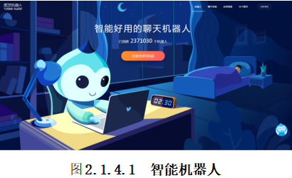
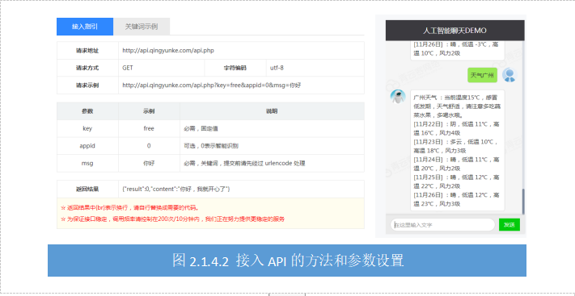
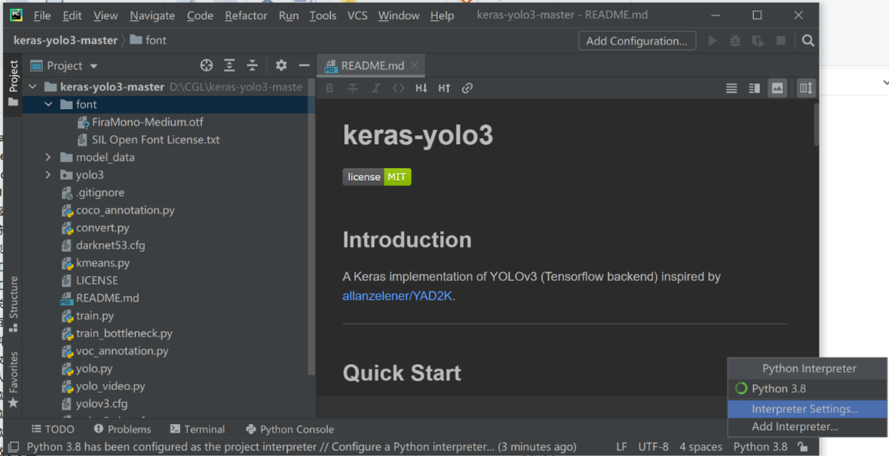
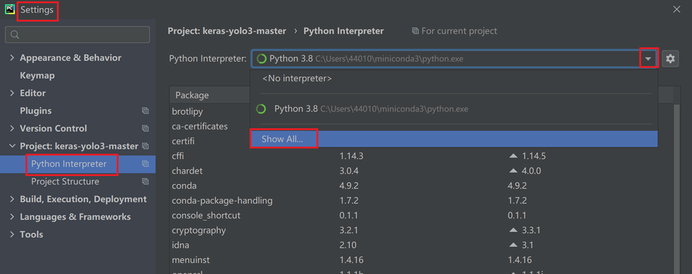
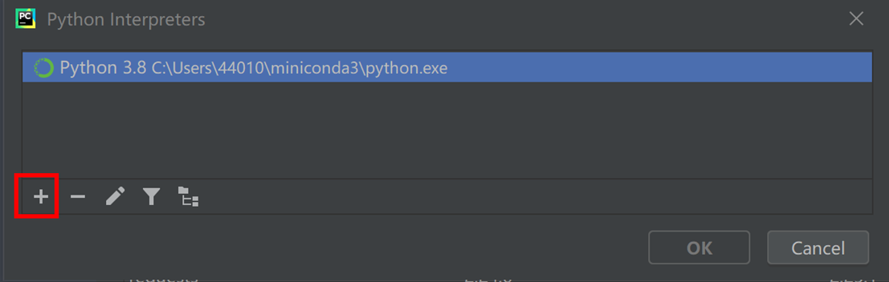
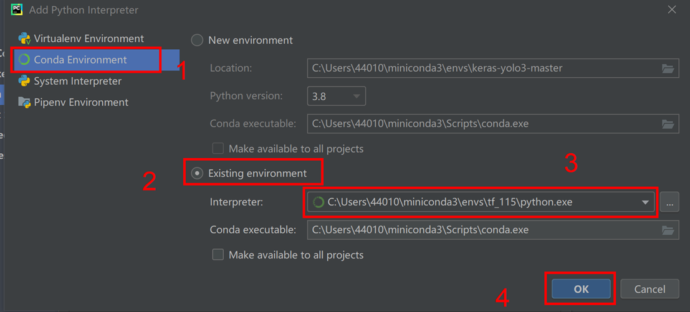
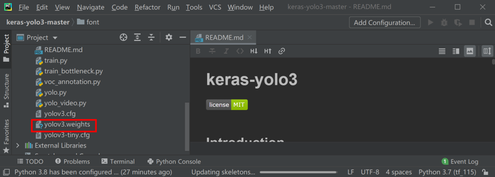
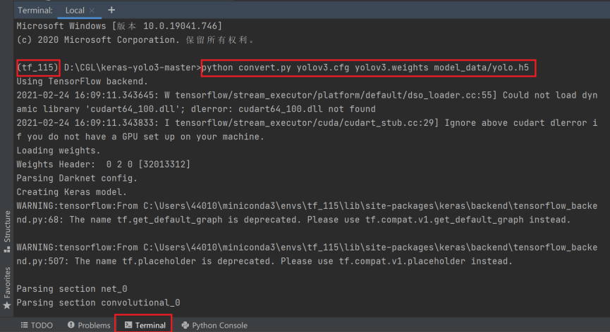
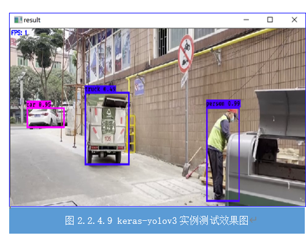

##任务2.2.4 测试keras-yolov3实例
###任务描述
YOLO有自己训练好的数据集，YOLO的检测类别和使用的数据集类型有关系，例如：VOC 数据集可以检测21个类别，COCO 数据集可以检测80个类别，而且有官方训练比较好的权重，我们可以直接拿来测试。请下载VOC数据集和提供目标检测视频test.mp4，在任务3的环境对test.mp4视频进行目标检测实验，参考效果如图2.2.4.1。

图2.2.4.1 YOLOv3目标检测效果图
###学习目标
#####1.知识目标
（1）掌握keras-yolo3官方案例的测试方法。
（2）掌握Pycharm环境Python Interpreter的设置方法。
#####2.能力目标
（1）能利用Anaconda及Pycharm搭建yolo3的运行环境进行官方案例测试。
####3.素质素养目标
（1）培养不怕困难、认真细致的工作作风；
（2）培养工程思维意识；
（3）培养遵守规范的意识。
任务分析
##### 1.重点
keras-yolo3官方案例的测试。
##### 2.难点
keras-yolo3官方案例的测试。
###知识链接
Darkent是个轻量级深度学习训练框架，用c和cuda编写，支持GPU加速。darknet和tensorflow，pytorch，caffe，mxnet一样，是用于跑模型的底层框架。
Yolo(从yolov1~yolov3)系列是目标检测领域比较优秀的网络模型，和yolo差不多的有SSD，R-CNN，Faster R-CNN等。
Yolo是用于目标检测的模型，darkent是跑模型的框架。Joseph Chet Redmon开发了一个深度学习框架Darkent，并且设计了多种yolo系列模型，这些模型顺理成章地用他自己开发的darknet框架来训练。本项目就采用Darkent来跑YOLO模型。
####1.下载官方keras-yolov3项目文件，并在Pycharm中打开
keras-yolov3项目文件GitHub下载网址：https://github.com/qqwweee/keras-yolo3.git，下载解压之后使用Pycharm打开。
####2.为项目创建tf_115虚拟环境
（1）我们需要在pycharm里面设置之前在anaconda prompt里创建的tf_115虚拟环境，因此，以下操作非常关键，单击图2.2.4.2中框选的地方，会出现图2.2.4.3所示的列表，点击这个列表中的“Interpreter Settings”进行设置。

图2.2.4.2 keras-yolo3切换环境1

图2.2.4.3 keras-yolo3切换环境2
（2）在图2.2.4.4中的Python Interpreter，点击倒三角按钮，然后再点单击“Show All…”选项，打开Python Interp窗口（如图2.2.4.5所示），点击其中的“+”。

图2.2.4.4 keras-yolo3 Settings界面

图2.2.4.5 Python Interp界面
（3）进入Add Python Interpreter，按图2.2.4.6中标注的步骤进行操作，最后单击OK保存更改。

图2.2.4.6 Add Python Interpreter界面中配置ttf_115虚拟环境的步骤
经过以上三个步骤就能保证该项目是使用我们之前创建的tf_115的虚拟环境。
####3.下载官方权重并测试

图2.2.4.7 keras-yolo3中添加权重文件
**步骤2：**接着使用 pycharm 终端输入如下命令，把 darknet下的 yolov3 配置文件转换成 keras 适用的 .h5 文件。输入命令：**python convert.py yolov3.cfg yolov3.weights model_data/yolo.h5，**如图2.2.4.8所示：

图2.2.4.8 转换.h5 文件
**步骤3：**测试运行yolo.py 进入到 yolo.py 文件中，在文件的最后加上创建YOLO模型对象代码，调用YOLO模型测试本地的test.mp4视频，参考代码如下，这里是把测试视频test.mp4放在项目文件夹根目录下了。
yolo=YOLO()
detect_video(yolo,’test.mp4’)
右键运行项目，看见如图2.2。4.9所示的目标检测框和标签说明运行成功。

###素质素养养成
1.本任务涉及很多人工智能的相关术语及概念，多且复杂，但都不要求同学生掌握，只要求学生应用，培养学生面对新知识的学习能力及思考能力，引导学生认同终生学习的理念。
2.在实践过程中，会遇到很多不可预计的问题，在搭建虚拟环境中的过程培养学生遵守规则的职业素养。
3.通过目标检测示例效果的置信度和检测到的物体展示培养学生探索未知、追求真理、勇攀科学高峰的责任感和使命感。
###任务分组
####学生任务分配表
这是链接学生任务分配表
###任务实施
#####任务工作单1：Yolo3官方案例测试
组号：__________ 姓名：__________ 学号：__________ 检索号：__________
引导问题：
（1）通过分析讨论，阐述本任务在实施过程中的注意事项，本任务与任务3之间的联系？
—————————————————————————————————————————————————————————
（2）通过网络搜索资源，搜索Keras-Yolo3官方项目资源以及权重文件。
—————————————————————————————————————————————————————————
#####任务工作单2：Yolo3官方案例测试
组号：__________ 姓名：__________ 学号：__________ 检索号：__________
引导问题：
（1）测试yolo3官方案例并记录结果。
—————————————————————————————————————————————————————————
（2）总结在测试keras-yolo3官方案例时碰到的问题及解决方案。
—————————————————————————————————————————————————————————
（3）在完成本任务时，引发你思考的问题，以及你从网络中找到的答案？
—————————————————————————————————————————————————————————
####个人自评表
这是链接个人自评表
####小组内互评表
这是链接小组内互评表
####小组间互评表
这是链接小组间互评表
####教师评价表 这是链接教师评价表